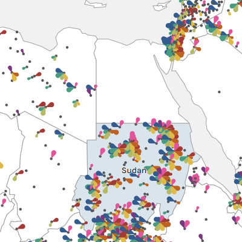
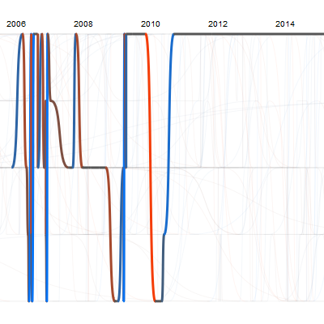
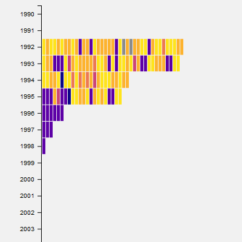

Visualizing Peace
Data Visualizations to Explore Peace Agreements Worldwide from 1990 through 2015
Agreements in Time and Space
A timeline and map of peace agreements that you may filter simultaneously by year, location, and topic.
Messy Timeline
A timeline that lets you explore the back and forth in peace negotiations.
Agreement Sequence Comparison
Three timelines of peace agreements for locations of your choice, colour-coded by agreement stage.
About
The Political Settlements Research Programme (PSRP) at the University of Edinburgh has created the PA-X Peace Agreements Database, which provides those studying and participating in peace processes with a repository of over 1,500 documents that address over 140 peace processes around the world between 1990 and 2015. The interactive visualisations on this website provide a more visual access to the database, complementing the Database's search interface.
To understand the codes assigned to each peace agreement as represented in some of the data visualizations, please refer to the PA-X Codebook.